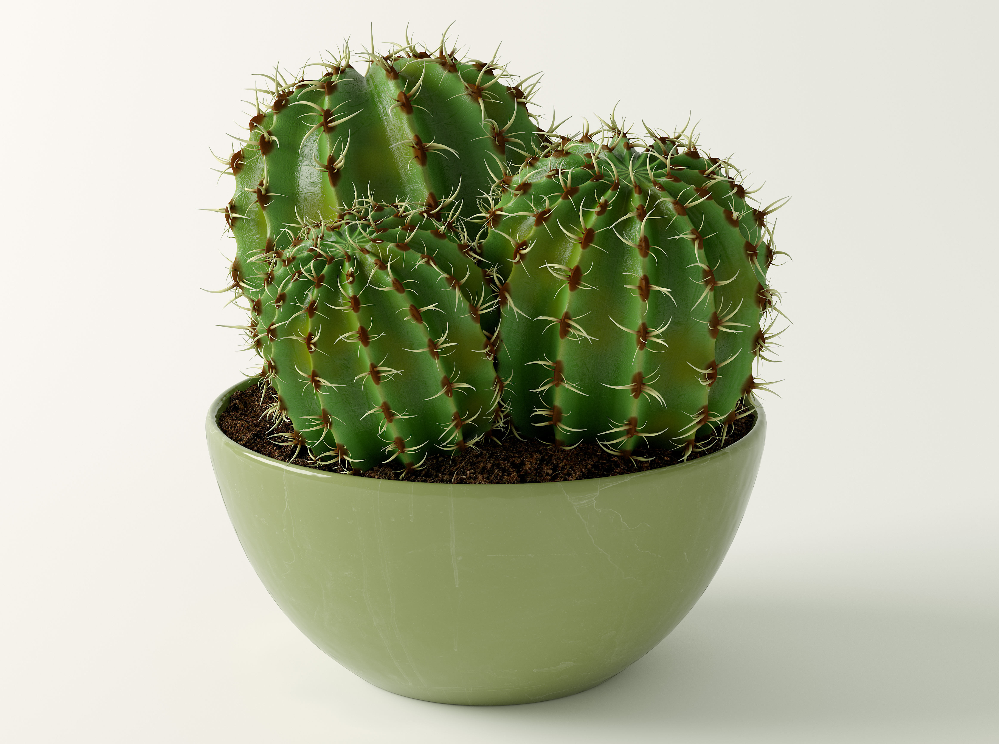

html>
<head>
  <meta charset="UTF-8">
  <title>До и после</title>
  <script src="jquery.min.js" type="text/javascript"></script>
  <script src="jquery.event.move.js" type="text/javascript"></script>
  <script src="jquery.twentytwenty.js" type="text/javascript"></script>
  <link rel="stylesheet" href="twentytwenty.css" type="text/css" media="screen" />
  <link rel="stylesheet" href="header.css" type="text/css" media="screen" />
</head>
<body>
<header>
<p>Кактусино <a href="https://3ddd.ru/blog/post/modeling_cactus_in_simplest_way" class="stuts">По мотивам урока на 3DDD.ru</a> <a href="https://qsedftghk.github.io/cactus/360" class="stuts"> &nbsp;&nbsp;&nbsp;&nbsp;&nbsp;(покрутить кактус на 360&#176;)</a></p>
</header>

<div id="container1" style="width: 68%; margin: 30px auto 0px auto;">
 
 
</div>

<script>
$(document).ready(function() {
  $("#container1").twentytwenty({
    default_offset_pct: 0.5, // сколько показывать 'изображение до' в процентах (максимально 1) сразу после загрузки страницы
    orientation: 'horizontal', // ориентация слайдера ('horizontal' или 'vertical')
    before_label: 'До', // подпись 'до'
    after_label: 'После', // подпись 'после'
    no_overlay: true, // не показывать затемнение с надписями 'до' и 'после'
    move_slider_on_hover: false, // двигать "бегунок" слайдера вместе с курсором мыши
    move_with_handle_only: true, // двигать слайдер только за его "бегунок"
    click_to_move: true // разрешить перемещение "бегунка" слайдера по клику на изображении
  });
});
</script>

</body>
</html>
